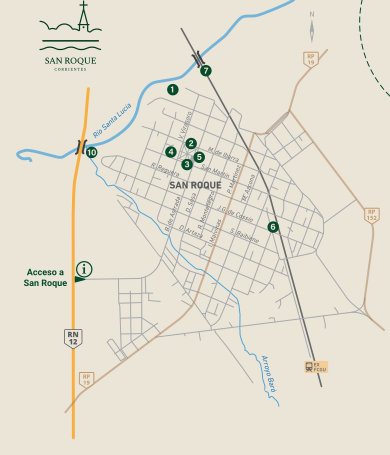

Leguiza Hotel
J.G. de Cossio 859
3777 206700Caminos, río y memoria se encuentran en San Roque. Conocé sus espacios históricos y el paisaje que los conecta.
Río Santa Lucía · San Roque, Corrientes
Diez paradas para seguir el río, atravesar los puentes y descubrir el patrimonio de San Roque.

El punto de informes está señalado con una i en el acceso a San Roque.
Ver más lugares para conocerOpciones y teléfonos incluidos en el folleto turístico.
J.G. de Cossio 859
3777 206700B. de Astrada 826
3777 508296Artaza y Azcona
3777 221872Acceso a San Roque
3777 542986San Martín 835
3794 928526B. de Astrada 812
3777 534039B. de Astrada
3795 139474Acceso a San Roque
3777 472472B. de Astrada 812
3777 302498Comedores y propuestas gastronómicas de la ciudad.
Acceso a San Roque
3777 472472Acceso a San Roque
3777 674450S. Baibiene 525
3777 674962M. de Ibarra 654
3777 533524P. Martínez 308
3777 221199Terminal de Ómnibus
3777 391638J.G. de Cossio 704
3777 672266Desiderio Sosa 849
3777 254827Servicios, salud y un punto de encuentro donde empezar a recorrer.
Acceso a San Roque · Berón de Astrada y Ruta Nacional 12
Artaza y Reguera
S. Baibiene 721
3794 204583J.G. de Cossio 854
3777 478055J. Cossio y I. Malvinas
3773 431985Banco de Corrientes · J. Cossio y I. Malvinas · Red Link
San Roque · J.G. de Cossio 995
3794 204583Tradiciones, encuentros y fiestas que forman parte de nuestra agenda.
Y durante todo el año Expomotos, stunts, audio car, velo terra, BMX, MTB, remates de ganado y exposiciones.
Consultá las fechas y la programación antes de tu visita.